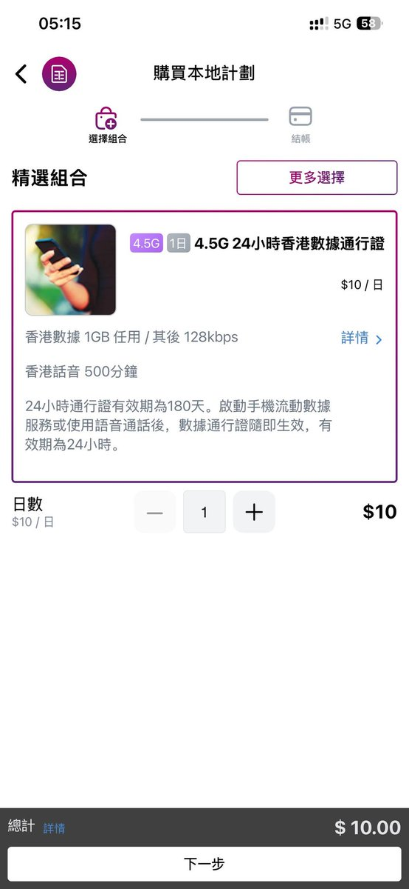
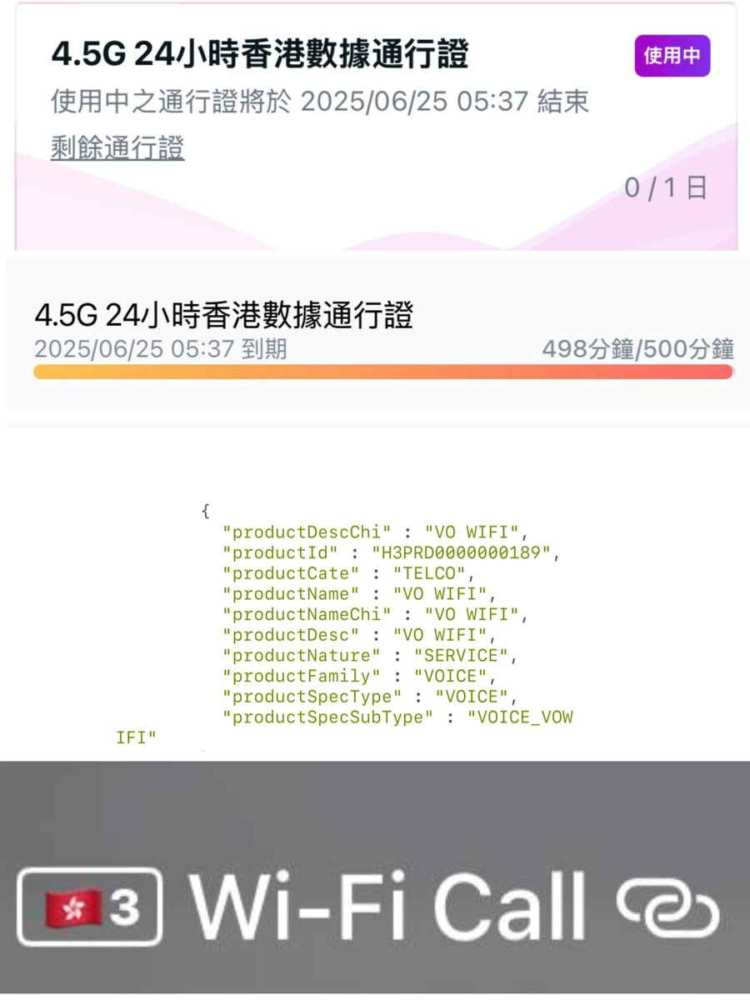
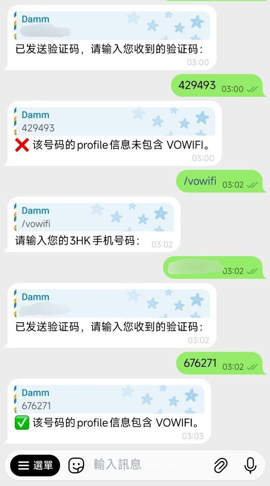

最近看到好多推友在搞3HK选号，双卡都是3HK DIY，购买了10HKD这张成功拉起。
经Damm大佬测试，10HKD的本地通行证是带vowifi的500min本地通话。购买后使用关闭定位飞行模式使用香港ip即可拉起，理论上所有语音包都带vowifi😋
如果你也是3HK DIY/Sosim/HAHA/3国际万能卡/SIMWorld全能储值卡的用户，一直困惑WiFi通话拉不起来，可以使用电报机器人 @lpatest_bot 并用指令 /vowifi 可以查询和记旗下的预付卡号码是否激活了vowifi功能(没有此功能就算是在本港也拉不起来)，原理是接码使用 /user/getProfile 查询服务包里是否有VO WIFI，隐私党勿用，可抓包自行查询。
经Damm大佬测试，10HKD的本地通行证是带vowifi的500min本地通话。购买后使用关闭定位飞行模式使用香港ip即可拉起，理论上所有语音包都带vowifi😋
如果你也是3HK DIY/Sosim/HAHA/3国际万能卡/SIMWorld全能储值卡的用户，一直困惑WiFi通话拉不起来，可以使用电报机器人 @lpatest_bot 并用指令 /vowifi 可以查询和记旗下的预付卡号码是否激活了vowifi功能(没有此功能就算是在本港也拉不起来)，原理是接码使用 /user/getProfile 查询服务包里是否有VO WIFI，隐私党勿用，可抓包自行查询。


